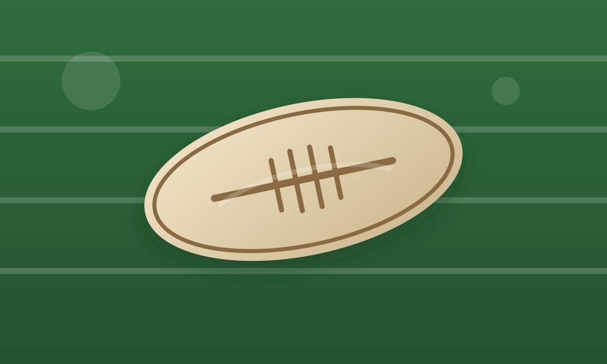

Welcome to my article about Rugby!
Details
Rugby is a thrilling sport that combines physicality, strategy, and teamwork. In this article, we will explore the basics of rugby, provide tips for playing the game, help you find a local club, and answer some frequently asked questions about the sport.

What is rugby?
Rugby is a team sport that originated in England in the early 19th century. It is played with an oval-shaped ball and involves two teams of 15 players each. The objective of the game is to score points by carrying, passing, and kicking the ball to the opposing team's goal area. Rugby is known for its physicality, teamwork, and strategic gameplay.
Rugby tips
Here are some tips for playing rugby:
- Always wear the appropriate protective gear, including a mouthguard and padded clothing.
- Focus on improving your fitness and strength to handle the physical demands of the game.
- Work on your passing and catching skills to maintain possession of the ball.
- Communicate effectively with your teammates on the field.
- Learn the rules and strategies of the game to make better decisions during play.
Find a club close to you!
To find a rugby club near you, you can use the following resources:
- Visit the official website of your country's rugby union for a list of registered clubs.
- Use online directories or search engines to locate local rugby clubs in your area.
- Check social media platforms for rugby clubs and community groups in your region.
- Attend local rugby events or matches to connect with players and coaches.
Rugby FAQs
Here are some frequently asked questions about rugby:
- Q: How long is a rugby match? A: A standard rugby match consists of two halves, each lasting 40 minutes, with a 10-minute halftime break.
- Q: How many players are on a rugby team? A: In rugby union, each team has 15 players on the field, while in rugby league, each team has 13 players.
- Q: What is the difference between rugby union and rugby league? A: Rugby union and rugby league are two different codes of rugby with distinct rules, scoring systems, and gameplay styles. Rugby union is played with 15 players per team and emphasizes scrums and lineouts, while rugby league is played with 13 players per team and focuses on faster-paced gameplay with fewer stoppages.
- Q: Can women play rugby? A: Yes, women can play rugby, and there are many women's rugby teams and competitions worldwide.
- Q: Is rugby a safe sport? A: While rugby is a contact sport and carries some risk of injury, proper training, protective gear, and adherence to the rules can help minimize the risk and ensure a safe playing experience.